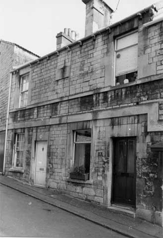
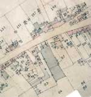

Type of building:
Terraced cottage
Listing:
Not listed
Plan and elevation:
Double pile, single fronted. Two-storied with attic conversion
Summary of the probable main building
history:
About 1875.

The property to right - west elevation
Construction:
West (front) elevation: coursed and squared rubble stone with a wide dressed string
course between the ground and first floor and another but narrower dressed string
coursing at first floor window sill level. One ground floor window to the left
with a replacement aluminium and plate glass window and a modern half-glazed door
to the right. On the evidence of the northern neighbouring cottage, the original
window was a four-over-four sash with horns and with a solid wooden four-panelled
door. At first floor level there is one window to the right (over the entry) and
a corbel table at eaves level. A stone plaque has been fixed to the wall at first
floor level and placed centrally between the cottage and its northern neighbour.
Now barely legible the plaque is said to read: “Working Men’s Institute
1878” (Dobbie p. 72). The two cottages were once connected with communicating
doors (now blocked) at both ground floor and first floor levels (information from
the owners).
The roof is of butt purlin construction, pitched and slated with a party ashlar chimney stack.
The east (rear) elevation has a dressed stone string course between the ground and first floor levels. The entry has been altered (narrowed). To the left of the entry one narrow window on the ground floor and a similar on the first floor lit the original staircase, which rose from the south wall of the present kitchen. The staircase is now a modern insertion of open-tread design rising from the present living room.
Date & development:
The cottage is the second of a falling terrace of thirteen cottages running north-south.
The terrace is built on the site of a former malthouse and brewery complex (per
the 1840 Tithe Map) and may have been built from the recycled stone of that complex.
The gable wall of the southernmost cottage, in particular, is probably the old
malthouse-brewery gable end left standing.
References and bibliography:
- 1840 Batheaston Tithe Map and Apportionment Schedule, Somerset Record Office
- “An English Rural Community” by B.M. Willmott Dobbie, Bath University
Press, 1969
- “The Rise and Fall of Bath’s Breweries:1736-1960” by Mike
Bone,
- Bath History Vol. Vlll 2000, Millstream Books, 2000
Reference Pictures
| Wall
plaque said to read “Working Mens Institute 1878” |
Ashlar
party wall. Stone possibly recycled from the demolished brewery
complex |
Survey Drawings
| Ground
Plan |
Section |
Images from the Archives
 |
| 1840 Tithe Map showing the brewery, malt houses and yard (93) of the Batheaston Brewery, which closed in 1870. A terrace of cottages was built about 1875 on the site of a former brewery and malthouse and probably using the salvaged stone See also property ref. BE 012A. |